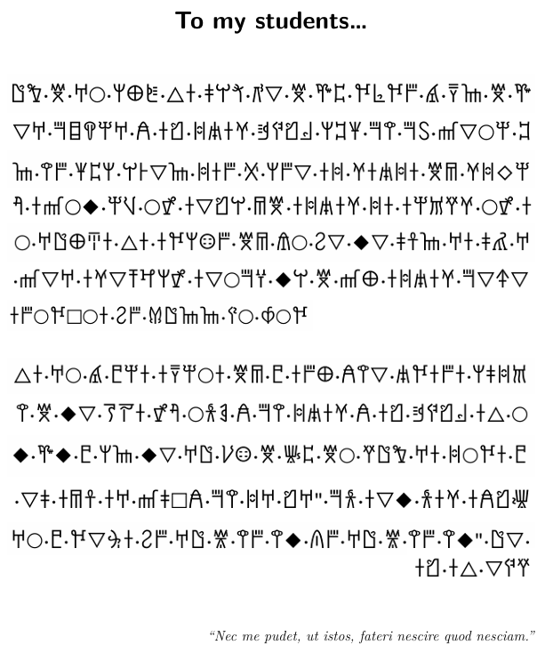

Day 27: A New Decipherment
Turn in your handout at the end of class for credit. You must work on the handout all class; otherwise you will receive partial credit.
A previously unknown text was discovered in the basement of Funkhouser Hall, University of Kentucky.

Note: many Linear B symbols were used in the creation this activity, but their value has no bearing on the actual values in the text.
Find words that differ by only:
What might this variation mean?
Which type of system do you think it is? Choose one:
Justify your answer with evidence.
decipherment.ipynbEach symbol in the original script has been replaced by a single character; word separators (·) and spaces between sentences are kept as-is.
| Code | Original | | Code | Original | | Code | Original |
|------|----------|-|------|----------|-|------|----------|
| A | □ | | B | △ | | C | ▽ |
| D | ◆ | | E | ◇ | | F | ○ |
| G | 𐀀 | | H | 𐀁 | | I | 𐀂 |
| J | 𐀃 | | K | 𐀄 | | L | 𐀅 |
| M | 𐀆 | | N | 𐀇 | | O | 𐀈 |
| P | 𐀉 | | Q | 𐀊 | | R | 𐀋 |
| S | 𐀍 | | T | 𐀎 | | U | 𐀏 |
| V | 𐀐 | | W | 𐀑 | | X | 𐀒 |
| Y | 𐀓 | | Z | 𐀔 | | a | 𐀕 |
| b | 𐀖 | | c | 𐀗 | | d | 𐀘 |
| e | 𐀙 | | f | 𐀚 | | g | 𐀛 |
| h | 𐀜 | | i | 𐀝 | | j | 𐀞 |
| k | 𐀟 | | l | 𐀠 | | m | 𐀢 |
| n | 𐀣 | | o | 𐀤 | | p | 𐀥 |
| q | 𐀦 | | r | 𐀨 | | s | 𐀩 |
| t | 𐀪 | | u | 𐀫 | | v | 𐀬 |
| w | 𐀭 | | x | 𐀮 | | y | 𐀯 |
| z | 𐀰 | | 0 | 𐀱 | | 1 | 𐀲 |
| 2 | 𐀴 | | 3 | 𐀵 | | 4 | 𐀶 |
| 5 | 𐀷 | | 6 | 𐀸 | | 7 | 𐀹 |
| 8 | 𐀺 | | 9 | 𐀼 | | + | 𐀽 |
| / | 𐀿 | | | | | | |text = """JW·M·GF·sU+·Bu·jvc·8C·M·a1·drdx·7·eT·M·a1·fFCT·6x·nx·I1s·rJz+·wuyi·Ju·H·GfXQx·GCT·nx·I1s·vLCT·iux·R·sxC·ui·wuyiu·M5·wiEfu·WF·wgPfu·ui·wuyiu·M5·vJCu·WF·bf·DFTu·KF·GJUNu·Bu·udsox·M5·lF·6C·DC·j9T·Gu·jm·GC/Cx·wuyiu·UT·M·vD·qxFCu·Wsd3Cwu·GCT·uxFdAFu·6x·ZJTT·OF·4Fd
Bu·GF·7·0fu·uefFu·M5·0·uxU·HnC·yduxu·sjiPF·Bu·rJz+·Ju·H·wuyi·nx·H·ktF·KW·upS·CD·M·nD·aD·0·sT·DC·GJ·bo·M·h1·MF·gJW·Gu·iFdu·0hJHu·wut·DCu·tx·"GJ·Gi·nx·HAjT·Gu·95u·jC·GF·0·dCYu·6x·GJ·V·nx·nD·2x·GJ·V·nx·nD"·JC·gzC·Bu·Ju"""
print('Text loaded successfully!')
print(f'Total characters in text: {len(text)}')You can copy the code by click on the box in the upper right-hand corner. Run this in your colab
.ipynbdocument.
In this script, words are separated by a middle dot (·). Let’s split the text into individual words.
# Split the text into words using the · separator
# We also strip out quotation marks so they don't interfere
clean_text = text.replace('"', '')
words = clean_text.split('·')
# Strip any extra spaces (from the paragraph break)
words = [w.strip() for w in words if w.strip()]
print(f'Total number of words (tokens): {len(words)}')
print()
print('First 10 words:')
for i, word in enumerate(words[:10]):
print(f' {i+1}. {word}')Run this script to see how frequent words are. Remember, very frequent words are often grammatical words (like “the”, “and”, “of” in English).
from collections import Counter
word_counts = Counter(words)
print('=== WORD FREQUENCY (most common first) ===')
print(f'{"Word":<15} {"Count":<8} {"% of text"}')
print('-' * 35)
for word, count in word_counts.most_common(20):
percentage = (count / len(words)) * 100
print(f'{word:<15} {count:<8} {percentage:.1f}%')
print()
print(f'Total unique words (types): {len(word_counts)}')
print(f'Total word occurrences (tokens): {len(words)}')The type-token ratio (TTR) tells us how varied the vocabulary is. (English prose is typically around 0.4–0.6.)
num_types = len(word_counts)
num_tokens = len(words)
ttr = num_types / num_tokens
print(f'Unique words (types): {num_types}')
print(f'Total words (tokens): {num_tokens}')
print(f'Type-Token Ratio (TTR): {ttr:.3f}')
print()
if ttr > 0.7:
print('High TTR: the vocabulary is quite varied for this text length.')
elif ttr > 0.4:
print('Moderate TTR: a mix of repeated and unique words.')
else:
print('Low TTR: many words are repeated frequently.')Now let’s count individual signs (characters). Frequent signs might be vowels, common consonants, syllables, words, or grammatical markers.
ignore = set('· "')
all_signs = [ch for ch in text if ch not in ignore]
sign_counts = Counter(all_signs)
total_signs = len(all_signs)
print('=== SIGN FREQUENCY (most common first) ===')
print(f'{"Sign":<8} {"Count":<8} {"% of signs"}')
print('-' * 30)
for sign, count in sign_counts.most_common():
percentage = (count / total_signs) * 100
print(f'{sign:<8} {count:<8} {percentage:.1f}%')
print()
print(f'Total signs: {total_signs}')
print(f'Unique signs: {len(sign_counts)}')Some signs may prefer to appear at the beginning or end of words. This can reveal suffixes (like English -ing, -ed, -s) or prefixes.
initial_signs = [word[0] for word in words if len(word) > 0]
final_signs = [word[-1] for word in words if len(word) > 0]
initial_counts = Counter(initial_signs)
final_counts = Counter(final_signs)
print('=== MOST COMMON WORD-INITIAL SIGNS ===')
print(f'{"Sign":<8} {"Count":<8} {"% of words"}')
print('-' * 30)
for sign, count in initial_counts.most_common(10):
pct = count / len(initial_signs) * 100
print(f'{sign:<8} {count:<8} {pct:.1f}%')
print()
print('=== MOST COMMON WORD-FINAL SIGNS ===')
print(f'{"Sign":<8} {"Count":<8} {"% of words"}')
print('-' * 30)
for sign, count in final_counts.most_common(10):
pct = count / len(final_signs) * 100
print(f'{sign:<8} {count:<8} {pct:.1f}%')A bigram is a pair of signs that appear next to each other within a word. Frequent bigrams can reveal common syllable patterns or repeated morphemes.
bigrams = []
for word in words:
for i in range(len(word) - 1):
bigrams.append(word[i] + word[i+1])
bigram_counts = Counter(bigrams)
print('=== MOST COMMON SIGN BIGRAMS ===')
print(f'{"Bigram":<10} {"Count":<8} {"% of bigrams"}')
print('-' * 32)
for bigram, count in bigram_counts.most_common(15):
pct = count / len(bigrams) * 100
print(f'{bigram:<10} {count:<8} {pct:.1f}%')
print()
print(f'Total bigrams: {len(bigrams)}')
print(f'Unique bigrams: {len(bigram_counts)}')How long are the words? This can give clues about whether the script is syllabic, alphabetic, or logographic.
word_lengths = [len(word) for word in words]
length_counts = Counter(word_lengths)
avg_length = sum(word_lengths) / len(word_lengths)
print('=== WORD LENGTH DISTRIBUTION ===')
print(f'{"Length":<10} {"Count":<8} Bar chart')
print('-' * 40)
for length in sorted(length_counts.keys()):
count = length_counts[length]
bar = '█' * count
print(f'{length:<10} {count:<8} {bar}')
print()
print(f'Average word length: {avg_length:.2f} signs')
print(f'Shortest word: {min(word_lengths)} sign(s)')
print(f'Longest word: {max(word_lengths)} sign(s)')Let’s make a graph of sign frequencies.
Look at how many unique signs appear and how evenly their frequencies are distributed. Is the curve Zipfian?
import matplotlib.pyplot as plt
# Get sign frequencies in order
sign_freqs = [count for _, count in sign_counts.most_common()]
fig, axes = plt.subplots(1, 2, figsize=(14, 5))
# Left plot: frequency curve
axes[0].plot(range(1, len(sign_freqs) + 1), sign_freqs, color='coral', linewidth=2)
axes[0].set_xlabel('Sign rank (1 = most frequent)')
axes[0].set_ylabel('Frequency')
axes[0].set_title('Sign Frequency Distribution')
# Right plot: bar chart of all signs
signs = [sign for sign, _ in sign_counts.most_common()]
counts = [count for _, count in sign_counts.most_common()]
axes[1].bar(range(len(signs)), counts, color='coral', alpha=0.8)
axes[1].set_xticks(range(len(signs)))
axes[1].set_xticklabels(signs, fontsize=8, rotation=45)
axes[1].set_xlabel('Sign')
axes[1].set_ylabel('Frequency')
axes[1].set_title('Frequency of Each Sign')
plt.tight_layout()
plt.show()
print(f'Total unique signs in this text: {len(sign_counts)}')
print()
print('What does the number of unique signs suggest about the script type?')
print(' < 30 signs → probably an alphabet')
print(' 50-100 signs → probably a syllabary')
print(' 100+ signs → probably logographic')